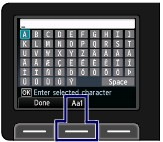
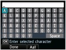
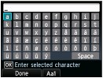
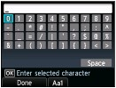
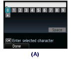
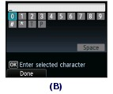
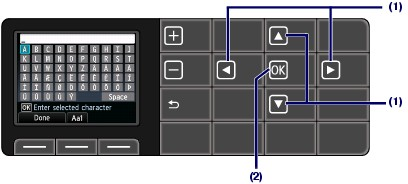
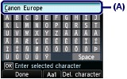

Entering Numbers, Letters, and Symbols
Entering Numbers, Letters, and Symbols Switching the Input Mode
Switching the Input ModeThe machine has three input modes: uppercase mode, lowercase mode, and numeric mode. When you press the center Function button (Aa1), the input mode is switched in the following order: uppercase mode, lowercase mode, then numeric mode.

Uppercase mode

Lowercase mode

Numeric mode

 Note Note
  (A) Unit fax/telephone number entry screen (B) Other fax/telephone number entry screen |
Entering Numbers, Letters, and Symbols(1) Press the  ,
,  ,
,  , or
, or  button to select a character.
button to select a character.
| Note
|
(2) Press the OK button.

(3) Repeat step (1) and (2) to enter all characters.
| Note
|
(4) After all characters are entered, press the left Function button to select Done.
Editing Entered Numbers, Letters, and SymbolsTo edit entered characters, press the or button to select the entry column (A).

The following operations are available.
- To insert a space
Press the or button to move the cursor under the position where you want to insert a space. Press the , , , or button to select Space, then press the OK button. A space will be inserted.
- To insert a character
Press the or button to move the cursor under the position where you want to insert a character. Press the , , , or button to select the desired character, then press the OK button. The character will be inserted.
- To delete a character
Press the or button to move the cursor under the character to delete, then press the right Function button to select Del. character. The character will be deleted. When the cursor is at the end of the characters and Del. character is selected, the left character of the cursor will be deleted (backspace).